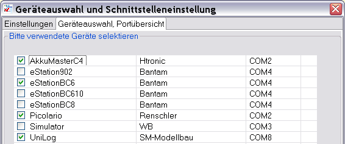
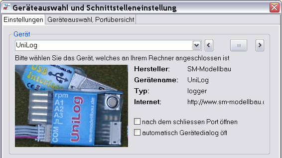
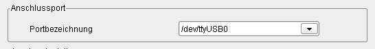
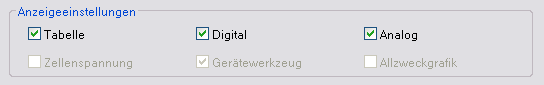
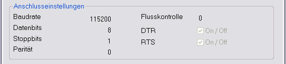

Mit dem Geräteauswahldialog können die Geräte ausgewählt werden, die der Anwendung zur Verfügung stehen sollen. In dieser Ansicht findet man alle Geräte, die eine Gerätekonfigurationsdatei im Verzeichnis "Devices" abgelegt haben.

Die eigentliche Auswahl des aktiven Gerätes passiert allerdings auf dem Tabulator "Einstellungen" oder durch die Geräteanwahl in der Menübar oder Toolbar.

Die Auswahl des aktiven Gerätes kann durch Selektion, direkt über der Miniaturansicht geschehen oder durch den Schieber rechts daneben. Das Bild des gerade angewählten Gerätes wird angezeigt. Als Zusatzinformationen wird neben dem Bildchen der Name des Gerätes und Herstellerinformationen angezeigt. Direkt unter den Geräteinformationen befinden sich ein Schalter um ein gerätespezifisches Verhalten bezüglich des Gerätedialog einzustellen.
Hinweis: Das aktive Gerät kann auch über die Menübar oder Toolbar gewechselt werden.
Unter dem aktuell gewählten Gerät wir der Kommunikationsport ausgewählt. Ist nur ein serieller Port am System verfügbar, wählt die Anwendung selbstständig den seriellen Port. Die Bilder zeigen eine Portauswahl unter Windows mit COM4 und einmal unter GNU/Linux mit einem USB-zu-Seriell-Adapter als /dev/ttyUSB0.

Durch den nachfolgenden Bereich des Dialoges kann bestimmt werden, ob die Tabulatoren mit ihren Inhalten angezeigt werden. Bei langsamen System kann hier das Laufzeitverhalten der Anwendung beeinflusst werden.

Die mittleren Schalter, Digital und Analog, sind vor allem für eine Live-Anzeige von Daten während einer Messung vorgesehen und machen bei vielen Geräten wenig Sinn. Bietet ein angeschlossenes Gerät keine Live-Datenabfrage, werden hier nur die Endwerte einer Kurve angezeigt. Eine bemerkbare Zeiteinsparung bei der Berechnung der Daten ist hier allerdings nicht gegeben, da ja nur Einzelwerte angezeigt werden. Im unteren Bereich sind die Einstellungen gerätespezifisch und nicht über diesen Dialog einstellbar. Hier muss die Gerätekonfigurationsdatei bearbeitet werden. Beispielhaft die Ansicht der Spannung pro Akkuzelle ist auch einen Live-Anzeige und stellt die einzelnen Zellen als Balkendiagramm dar. Das gilt aber nur für Geräte die diese Messwerte auch hergeben, also einige Ladegeräte für LiPo-Akkus oder Balancer.

Im unteren Bereich des Dialoges werden noch die für das Gerät verwendeten Einstellungen des seriellen Ports angezeigt. Eine Veränderung ist nicht vorgesehen, kann aber durch Verändern der Gerätekonfigurationsdatei erreicht werden.